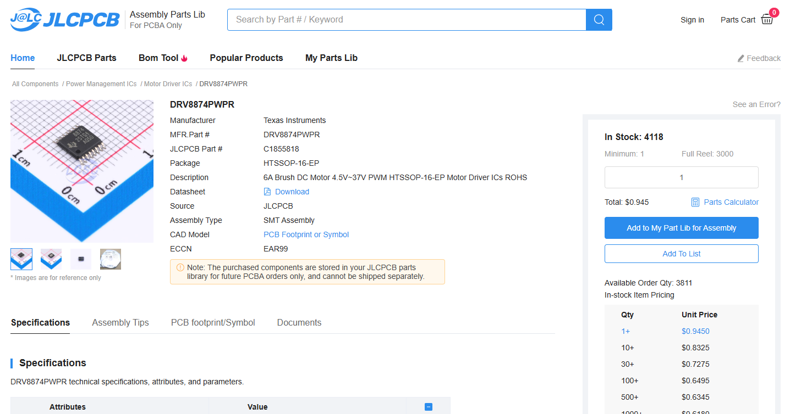
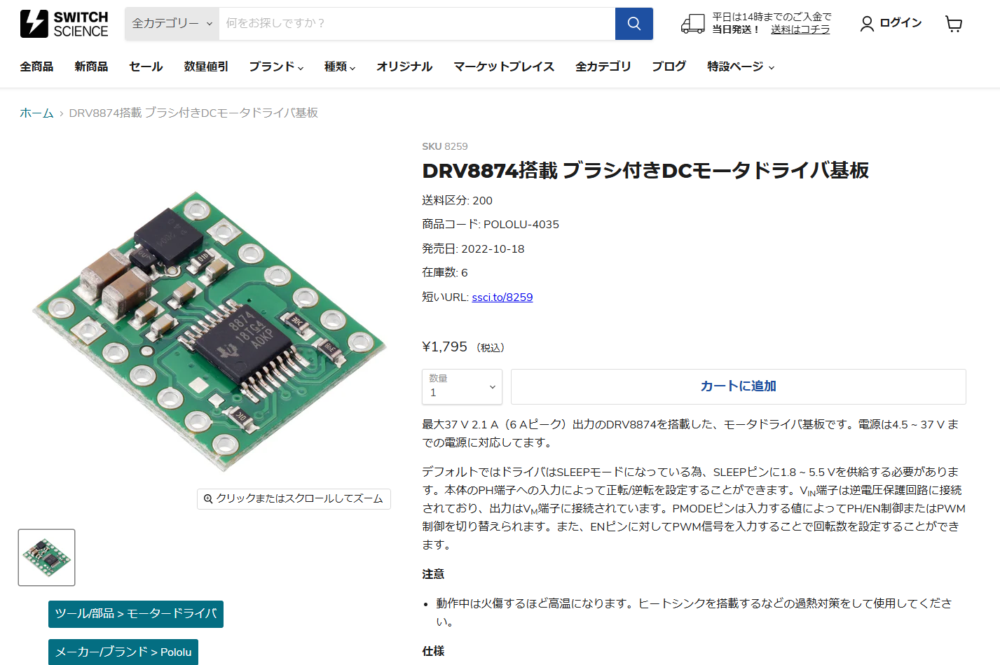
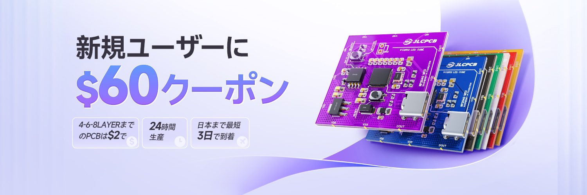
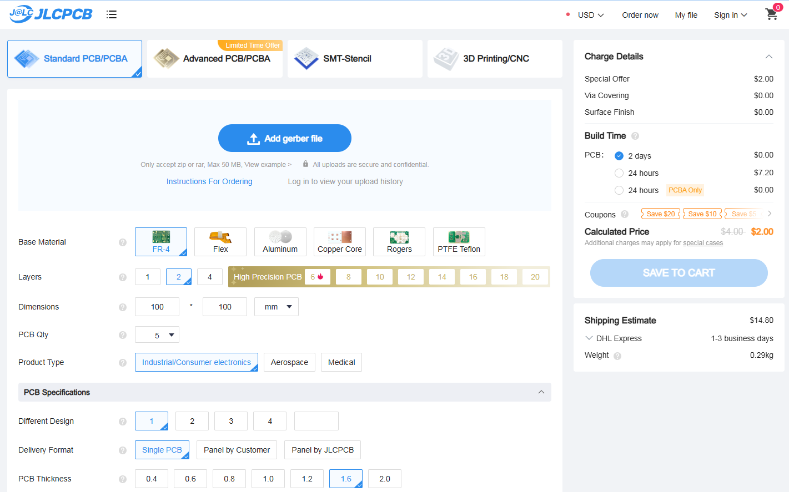
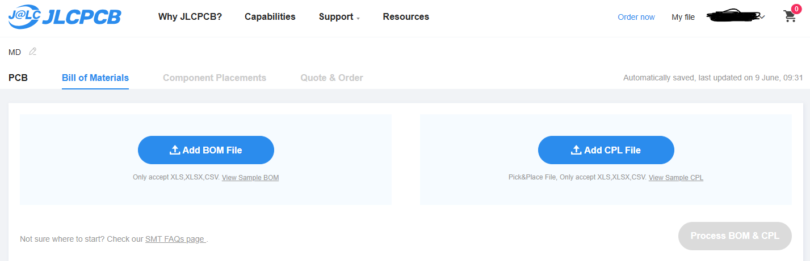
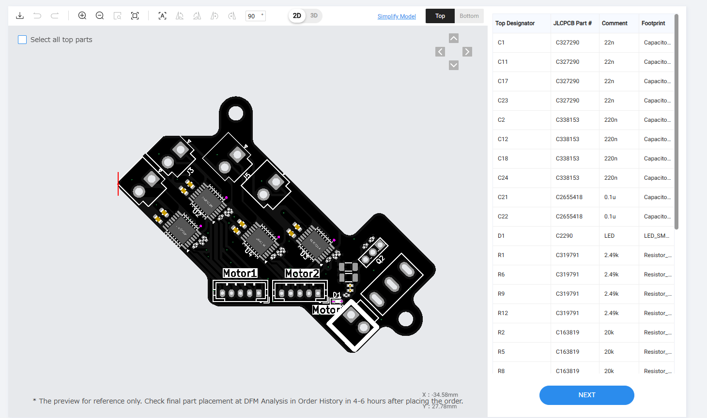

モータードライバの自作
2024/6/9 🖊たびと
今回のスポンサー
前回と同様、今回のモータードライバの作成も基板の製造を行う「JLCPCB」にサポートしていただきました。
こんにちは。昨年まではロボットに市販のモータードライバを使用していました。市販のモータードライバを使用することはいろいろなメリットがあります。
・ある程度動作が保証されている
さすがに動かないのに売られているという例は少ないと思います。ほとんどのものが接続して所定の設定を行えば使えるはずです。また保護回路等もあわせて搭載されており安心です。
・手に入りやすい
売られているものなので、もしも壊れたり、追加でほしくなった時は、すぐに調達することができます。
自作しようと思った理由
市販のモータードライバの使用を検討しましたが、ロボットの狭い隙間に収める必要があり、また基板も特殊な形にする必要がありました。そこでせっかくの機会にということで、自作することを決意しました。
ベースとなるモータードライバの選定
さて、自作するにあたって問題となるのはモータードライバのICに何を使うかです。いろんなRCJの参加者に聞いて、最終的にDRV8874にすることにしました。 さっそく今回も利用するJLCPCBに在庫があるか確認してみます。在庫確認はここから確認できます。調べてみたところ在庫がありました！なので作っていきたいと思います。 
製造データの制作
回路図の制作ですが、一からつくってもいいのですが、いつまでたってもロボットが動かないという事態になりそうなので、
インターネット上に転がっている回路図に頼ろうと思います。スイッチサイエンスにDRV8874のモジュールとその回路図が転がっていたので、それを使おうと思います。
自作する部分はICとその周辺回路、逆接続保護回路です。
・ICとのその周辺回路
具体的には配線図と照らし合わせながら、必要な配線を引き、コネクタとの導線を設計していきます。また、大電流が流れることが考えられる場所はできるだけパターン幅を確保しておきます。
とくに、同じものを４つ並べていくという作業になるため出来るだけそれに関連する部品はIC周りに集めそれを１ユニットととして設計することでうまく基板上を整理することができました。
・逆接続保護回路
基本どこであっても逆接続は危ないですが、とくに大電流を扱うモータードライバでは出来るだけ逆接続というのは避けたい事態です。コネクタである程度逆接続についてはなんとなりますが、ケーブル側がつける場所間違えていたりすれば、逆電流が流れる可能性は十分にあり得ます。
このモータードライバではPchMOSFETを用いて逆接続から回路を遮断する手法をとっています。（実際に動く稼働か怖くて実験してません(^ ^;)）

注文
今回もプリント基板の製造をJLCPCBに依頼しました。興味がある方はぜひ下のリンクからアクセスしてください。
jlcpcb.jp

・製造ファイルアップロード

ファイルをアップロードして、注文していきます。特に設定は変更せずに基板の色だけ変えて次に進みました。このとき表面実装の設定も一緒に行います。
・部品表ファイル、部品位置ファイルアップロード

基板、表面実装設定後、左下の青いボタンを押してファイルのアップロードに進みます。アップロードする２種類のファイルは事前に準備しておきましょう。Kicadの部品位置ファイルのJLCPCBにアップロードできる形式への変更は「製品」ページのソフトを使用することをお勧めします。
・部品の位置確認

ファイルをアップロード後、青いボタンで次に進むと、使用する部品の在庫状況が表示されます。必要であれば部品の変更を行うことができます。さらに青いボタンで次に進むと部品の位置の最終確認を行うことができます。よく向きが間違っていたりするので注意してください。
問題なければ次に進み注文の確認後カートに追加されます。これで支払いを済ませれば注文は終わりです。
基板到着
すべてのモーターが回りましたが、制御基板から直接モータードライバを制御できないという問題が発生しました。次回はこの問題を何とか解消したいと思います
だいぶ絶望的な見た目になってるけど、モーターなんとか全部動いた pic.twitter.com/i4vdHSlFWY
— たびと！🐙ー定理 (@tabito1419) June 2, 2024
最後に
長い間ロボット製作をサポートしていただいているJLCPCBに今回のモータードライバの製造についてもサポートしていただきました。JLCPCBでは現在、多層基板や、フレキシブル基板なども安く注文でき、いろんなものの制作に活用することができます！ぜひ皆さんも使ってみましょう！以上スポンサーの紹介でした^^ jlcpcb.jp